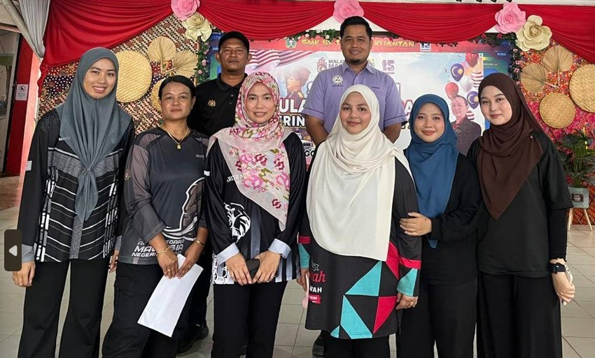
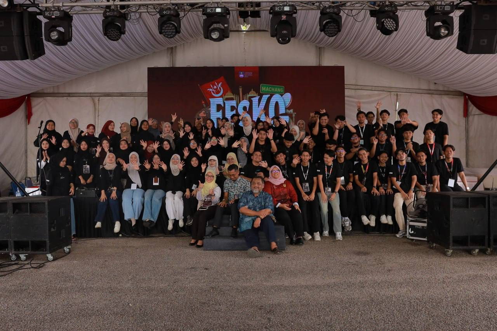
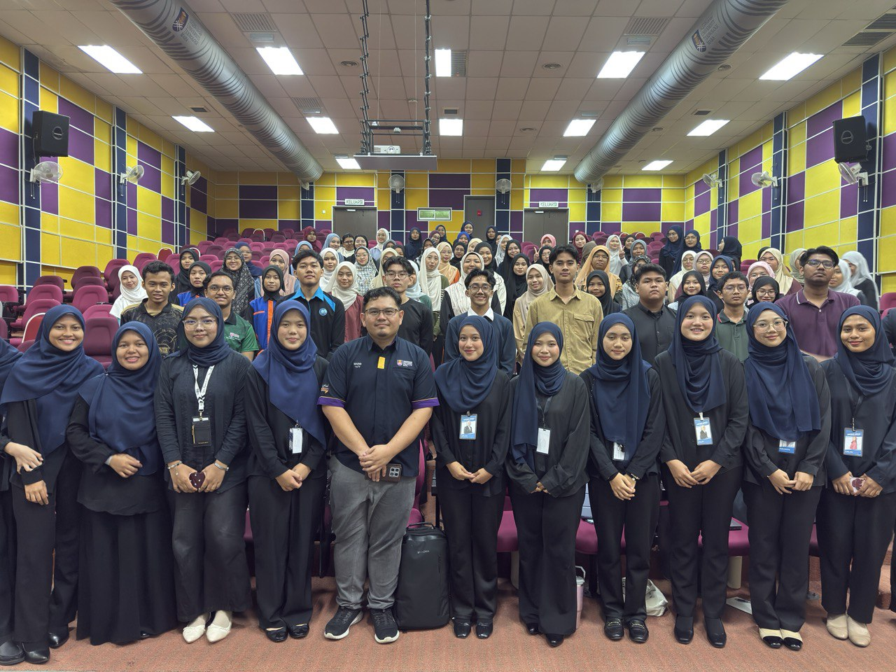
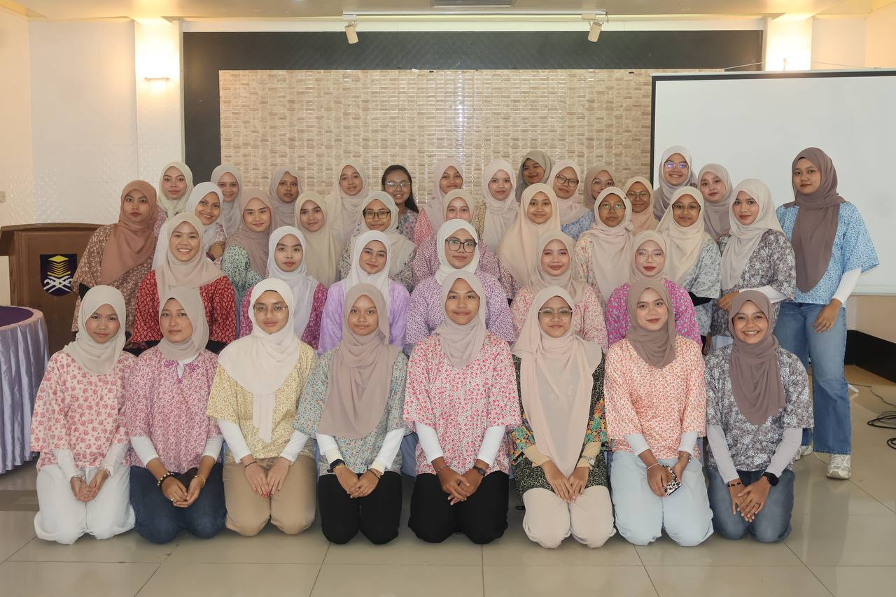
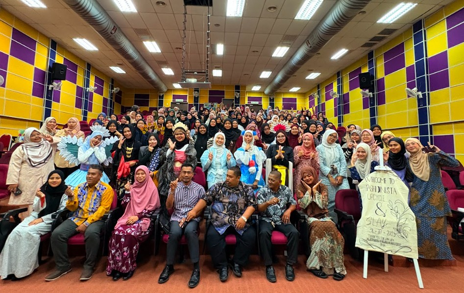
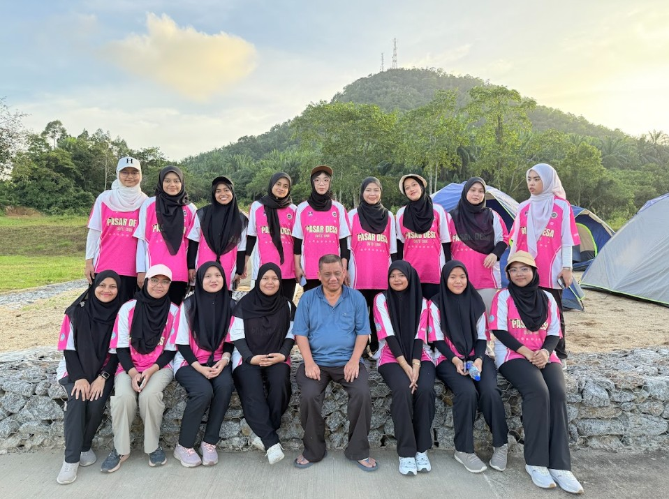

MY EXPERIENCE
Experience Journey.~`

I completed a two-month industrial training at the National Archives of Malaysia, Pahang Branch, where I gained extensive exposure to archival management and professional administrative practices. Throughout my placement, I learned how to handle, preserve, and organise important documents, assisted staff with daily operations, and became familiar with proper record-keeping procedures. This experience strengthened my understanding of workplace responsibilities, improved my communication skills, and gave me the opportunity to apply theoretical knowledge in a real working environment. Overall, the training was meaningful and greatly contributed to my personal and professional development.

I was part of FESKO-17, a major UiTM Machang event filled with impactful activities. The program ran for an entire week, and although it was physically tiring, the positive feedback and encouragement from visitors made the experience truly rewarding. I also enjoyed the variety of delicious and reasonably priced food and drinks available throughout the festival. Most importantly, I was able to feel the strong teamwork and collaboration among committee members from various colleges across UiTM Kelantan, Machang campus, which made the event even more meaningful.

I served as the Deputy Program Director for the “Corporate Success: From Learning to Leading” program. Through this responsibility, I gained a clearer and more accurate understanding of proper VIP management during events. I was also able to provide clear guidance to other club and association committees on the correct protocols for handling VIPs, as well as the appropriate decision-making practices that safeguard the image and professionalism of an organization. I am proud that the program ran smoothly and received positive feedback from the participants.

I served as the Treasurer for the “Empower Hour with JPKDO” program on 8 November 2025. Through this program, I became closer to the other committee secretariats, getting to know them better both personally and professionally. The experience was meaningful, filled with enjoyable and cheerful moments that strengthened our teamwork and made the entire program even more memorable.

I served as a committee member for the Fashionista Upcycle & Slay program held on Friday, 31 October 2025. This program encouraged participants to confidently express their creativity through outfits designed using recycled materials. The showcase of unique and beautifully crafted clothing left a lasting impression on me. I truly admired the courage and originality displayed by the participants throughout the event. I am grateful and proud to have successfully contributed to the smooth and successful execution of this program.

I attended the Self-Empowerment Camp (KPD) in early 2025 together with my friends. Throughout this program, I gained a deeper understanding of my responsibilities and the tasks entrusted to me. I truly enjoyed participating in this camp, as it offered valuable knowledge and helped sharpen my mindset in completing assigned work effectively.